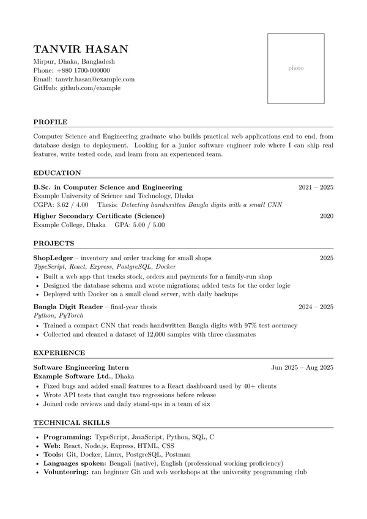
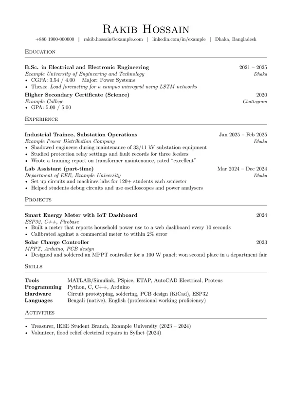
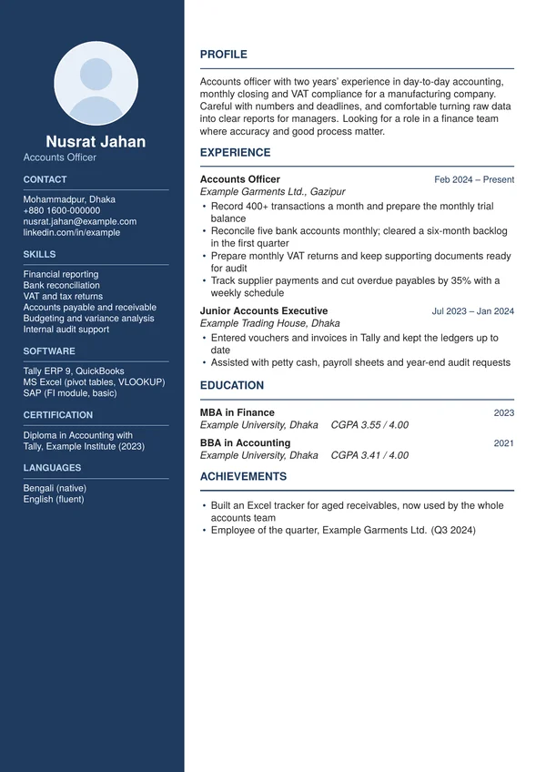
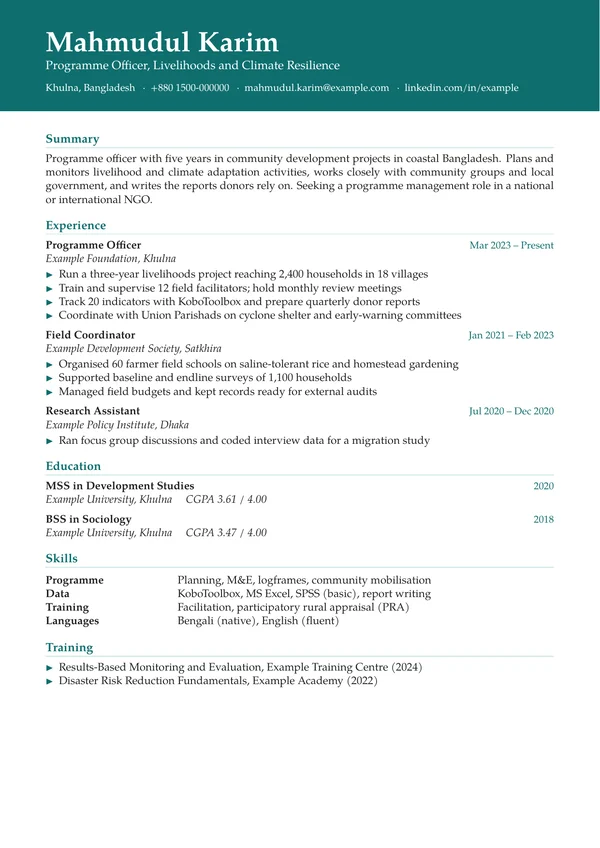
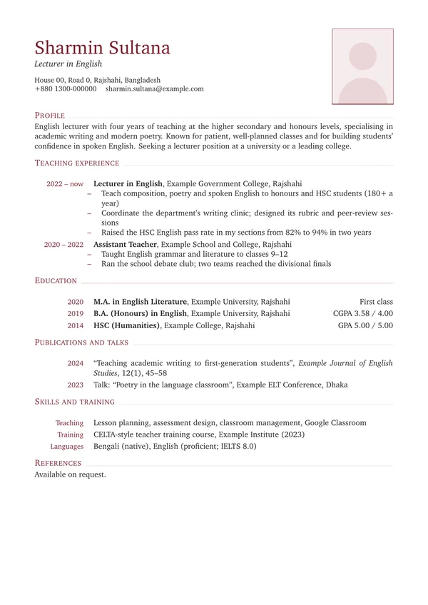
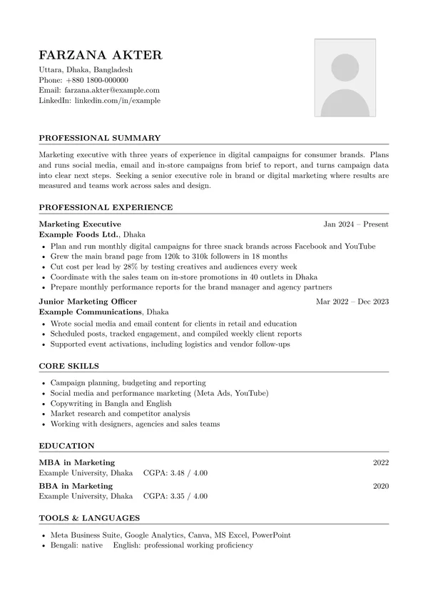

make cv
A CV that gets read যে সিভি পড়া হয়
I write and design clean, professional CVs in LaTeX for students, fresh graduates and people early in their careers. Clear structure, honest wording, and a layout that looks sharp on screen and on paper. শিক্ষার্থী, সদ্য গ্র্যাজুয়েট ও ক্যারিয়ারের শুরুতে থাকা সবার জন্য আমি LaTeX দিয়ে পরিষ্কার, প্রফেশনাল সিভি লিখি ও সাজাই। গোছানো কাঠামো, সৎ ভাষা, আর এমন লেআউট যা স্ক্রিনে ও প্রিন্টে দুই জায়গাতেই সুন্দর দেখায়।
CSE student in Dhaka. Every CV is written by me, not a template generator. ঢাকার একজন CSE শিক্ষার্থী। প্রতিটি সিভি আমি নিজে লিখি, কোনো টেমপ্লেট জেনারেটর দিয়ে নয়।
Packages & pricesপ্যাকেজ ও দাম
-
CV polishসিভি পলিশ
৳500
You already have a CV. I rebuild it in a clean LaTeX layout, fix the wording, structure and mistakes, and make it read well. আপনার আগে থেকেই সিভি আছে। আমি সেটা পরিষ্কার LaTeX লেআউটে নতুন করে সাজাই, ভাষা, কাঠামো ও ভুল ঠিক করি।
-
Fresher CVফ্রেশার সিভি
৳1,000–1,200
Written from scratch from your details: education, projects, internships, skills. One round of changes included. আপনার তথ্য থেকে শুরু থেকে লেখা: পড়াশোনা, প্রজেক্ট, ইন্টার্নশিপ, দক্ষতা। একবার সংশোধন অন্তর্ভুক্ত।
-
CV + cover letter + LinkedInসিভি + কভার লেটার + লিংকডইন
৳1,500–2,000
The full set: a new CV, a cover letter you can adapt for each job, and tips to bring your LinkedIn profile in line. পুরো সেট: নতুন সিভি, প্রতিটি চাকরির জন্য বদলে নেওয়া যায় এমন কভার লেটার, আর লিংকডইন প্রোফাইল ঠিক করার পরামর্শ।
The price within a range depends on how much there is to write. You get a PDF, plus the editable source if you want it. কতটা লিখতে হবে তার ওপর দাম নির্ভর করে। আপনি PDF পাবেন, চাইলে এডিট করার মতো সোর্স ফাইলও।
Sample CVsনমুনা সিভি
Fictional people, real layouts. With or without a photo, black and white or in colour: pick a style, or ask for your own. কাল্পনিক মানুষ, আসল লেআউট। ছবিসহ বা ছবি ছাড়া, সাদাকালো বা রঙিন: পছন্দের স্টাইল বেছে নিন, অথবা নিজের মতো চান।






How it worksকীভাবে কাজ করে
-
messageমেসেজ
Tell me on WhatsApp what you need and what kind of job you're applying for.হোয়াটসঅ্যাপে জানান কী দরকার, আর কোন ধরনের চাকরির জন্য আবেদন করছেন।
-
your detailsআপনার তথ্য
Send your current CV if you have one, or your education, experience, projects and skills. A photo if you want one on the CV.থাকলে আপনার বর্তমান সিভি পাঠান, নাহলে পড়াশোনা, অভিজ্ঞতা, প্রজেক্ট ও দক্ষতার তথ্য। সিভিতে ছবি চাইলে একটি ছবি।
-
first draftপ্রথম খসড়া
Within 1–2 days, often faster. You read it and tell me what to change.১–২ দিনের মধ্যে, অনেক সময় আরও আগে। আপনি পড়ে জানাবেন কী বদলাতে হবে।
-
final PDFফাইনাল PDF
I make the changes and send the finished CV, ready to upload or print.পরিবর্তন করে তৈরি সিভি পাঠাই, আপলোড বা প্রিন্টের জন্য প্রস্তুত।
Payment by bKash or Nagad. পেমেন্ট বিকাশ বা নগদে।
Your privacyআপনার গোপনীয়তা
Your details are used only to make your CV. I don't share them, and I delete them after delivery unless you ask me to keep them for future updates. আপনার তথ্য শুধু আপনার সিভি তৈরিতেই ব্যবহার হয়। আমি কারও সাথে শেয়ার করি না, আর ডেলিভারির পর মুছে ফেলি, যদি না পরে আপডেটের জন্য রেখে দিতে বলেন।
Ready when you are শুরু করতে প্রস্তুত
Message me on WhatsAppহোয়াটসঅ্যাপে মেসেজ দিন+880 1710-361756